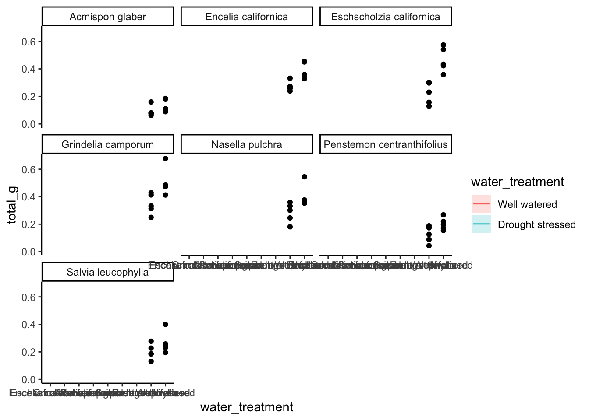

── Attaching core tidyverse packages ──────────────────────── tidyverse 2.0.0 ──
✔ dplyr 1.1.4 ✔ readr 2.1.5
✔ forcats 1.0.0 ✔ stringr 1.5.1
✔ ggplot2 3.5.1 ✔ tibble 3.2.1
✔ lubridate 1.9.3 ✔ tidyr 1.3.1
✔ purrr 1.0.2
── Conflicts ────────────────────────────────────────── tidyverse_conflicts() ──
✖ dplyr::filter() masks stats::filter()
✖ dplyr::lag() masks stats::lag()
ℹ Use the conflicted package (<http://conflicted.r-lib.org/>) to force all conflicts to become errors
library(readxl)library(here)
here() starts at /Users/jayne/Desktop/ENVS-193DS/Campbell-Jayne_homework-03
library(janitor)
Attaching package: 'janitor'
The following objects are masked from 'package:stats':
chisq.test, fisher.test
# visualizing pairslibrary(GGally)
Registered S3 method overwritten by 'GGally':
method from
+.gg ggplot2
# model selectionlibrary(MuMIn)# model predictionslibrary(ggeffects)# model tableslibrary(gtsummary)library(flextable)
Attaching package: 'flextable'
The following objects are masked from 'package:gtsummary':
as_flextable, continuous_summary
The following object is masked from 'package:purrr':
compose
library(modelsummary)
`modelsummary` 2.0.0 now uses `tinytable` as its default table-drawing
backend. Learn more at: https://vincentarelbundock.github.io/tinytable/
Revert to `kableExtra` for one session:
options(modelsummary_factory_default = 'kableExtra')
options(modelsummary_factory_latex = 'kableExtra')
options(modelsummary_factory_html = 'kableExtra')
Silence this message forever:
config_modelsummary(startup_message = FALSE)
drought_exp <-read_xlsx(path =here("data", # reading in data"Valliere_etal_EcoApps_Data.xlsx"),sheet ="First Harvest")# quick look at data str(drought_exp)
# cleaningdrought_exp_clean <- drought_exp %>%clean_names() %>%# nicer column namesmutate(species_name =case_when( # adding column with species scientific names species =="ENCCAL"~"Encelia californica", # bush sunflower species =="ESCCAL"~"Eschscholzia californica", # California poppy species =="PENCEN"~"Penstemon centranthifolius", # Scarlet bugler species =="GRICAM"~"Grindelia camporum", # great valley gumweed species =="SALLEU"~"Salvia leucophylla", # Purple sage species =="STIPUL"~"Nasella pulchra", # Purple needlegrass species =="LOTSCO"~"Acmispon glaber"# deerweed )) %>%relocate(species_name, .after = species) %>%# moving species_name column after speciesmutate(water_treatment =case_when( # adding column with full treatment names water =="WW"~"Well watered", water =="DS"~"Drought stressed" )) %>%relocate(water_treatment, .after = water) # moving water_treatment column after water
Problem 1. Multiple linear regression: model selection and construction
Make a table or list of all the models from class and the last one you constructed on your own. Write a caption for your table.
models <-data.frame(Model_numbers =c("Model 0", "Model 1", "Model 2", "Model 3", "Model 4"),Model =c("null model", "saturated model", "two predictors", "two predictors", "two predictors"),Predictors =c("none", "SLA, water treatment, and species", "SLA and water treatment", "SLA and species", "water treatment and species"))modeldatatable <-flextable(models) %>%# create flextableset_header_labels(Model_numbers ="Model numbers", Model ="Model", Predictors ="Predictors") %>%# rename headers align(align ="center", part ="all") %>%# formatting autofit() %>%theme_vanilla() %>%bold(part ="header") #bold everything in the header
Table 1. Five models that predict the total biomass of plant species. Each row represents one of the models. The columns represent the model number, the model, and the predictors for that model. SLA stands for the specific leaf area, which is the surface area of a leaf divided by its dry mass and it represents life strategy (mm2/g).
print(modeldatatable)
a flextable object.
col_keys: `Model_numbers`, `Model`, `Predictors`
header has 1 row(s)
body has 5 row(s)
original dataset sample:
Model_numbers Model Predictors
1 Model 0 null model none
2 Model 1 saturated model SLA, water treatment, and species
3 Model 2 two predictors SLA and water treatment
4 Model 3 two predictors SLA and species
5 Model 4 two predictors water treatment and species
Write a 5-6 sentence “statistical methods” section
In this scenario, we’re interested in how three variables affect total biomass: species (categorical), water treatment (categorical), specific leaf area (SLA, numeric). In order to examine the influence of species, water treatment, and specific leaf area on plant biomass, I created five models based on the three potential predictors. These included a null model, a saturated model, and three models with two predictors each. To determine which linear model best predicted the biomass, I used Akaike Information Criterion (AIC), which takes into account how well the model predicts the data as well as increasing complexity. Out of the five models we have tried, the best model was the one that included water treatment and species because it produced the lowest AIC (AIcc = -158.8). I visually determined that my final model conformed to the assumptions of a linear model by looking at the diagnostics and ensuring there was random and even dispersion, homoscedasticity, normality of variance and no excessive outliers.
Make a visualization of the model predictions with underlying data for you “best” model
# model of total biomass as a function of water treatment and speciesmodel4 <-lm(total_g ~ species_name + water_treatment, # formula for modeldata = drought_exp_clean) # data frameplot(model4) # printing plots for model 4
model_preds <-ggpredict(model4, # create model predictions terms =c("water_treatment", "species_name"))View(model_preds) # View the predictions as a data frame
Creating visualization for best model (predictors = water treatment and species)
# creating new data frame of model predictions for plottingmodel_preds_for_plotting <- model_preds %>%rename( # renaming columns to make this easier to usewater_treatment = x,species_name = group)ggplot() +# underlying datageom_point(data = drought_exp_clean,aes(x = water_treatment,y = total_g,)) +# model prediction 95% CI ribbongeom_ribbon(data = model_preds_for_plotting,aes(x = species_name, y = predicted,ymin = conf.low,ymax = conf.high,fill = water_treatment),alpha =0.2) +# model prediction linesgeom_line(data = model_preds_for_plotting,aes(x = species_name, y = predicted,color = water_treatment)) +# cleaner themetheme_classic() +# creating different panels for speciesfacet_wrap(~species_name)
`geom_line()`: Each group consists of only one observation.
ℹ Do you need to adjust the group aesthetic?
`geom_line()`: Each group consists of only one observation.
ℹ Do you need to adjust the group aesthetic?
`geom_line()`: Each group consists of only one observation.
ℹ Do you need to adjust the group aesthetic?
`geom_line()`: Each group consists of only one observation.
ℹ Do you need to adjust the group aesthetic?
`geom_line()`: Each group consists of only one observation.
ℹ Do you need to adjust the group aesthetic?
`geom_line()`: Each group consists of only one observation.
ℹ Do you need to adjust the group aesthetic?
`geom_line()`: Each group consists of only one observation.
ℹ Do you need to adjust the group aesthetic?

write a caption for your visualization include a data citation
Results section
The predictors, water treatment and species, best described the total mass based on model statistics… On average, the biomass was lower for drought stressed plants than for well watered plants, which aligns with biological knowledge. On average, plant species with larger ranges tended to have larger biomasses.
Problem 2. Affective visualization
Describe in words what an affective visualization could look like for your personal data
Since affective visualizations prioritize creativity and should convey emotion, I would like to draw images of the types of caffeinated beverages I have been drinking. I could do different shapes and colors for each beverage and make the sizes dependent on the amount of caffeine in each. I could also organize them by time of day by having a symbol for morning, afternoon, and night and clump the other symbols around them. I would create a key for each of the symbols and describe what they represent.
Create a sketch on paper of your idea
Make a draft of your visualization Painting
Write an artist statement
This visualization shows my consumption of caffeinated beverages in terms of the type, approximate caffeine content, and the time of day they were consumed at. I was very influenced by the Dear Data project done by Giorgia Lupi and Stefanie Posavec and their use of symbols and keys to convey information and messages. My work is in the form of acrylic paint and ink pen on a 8 by 12 inch canvas. I created my work by first creating an outline of where I wanted everything and using a ruler and pencil to map it out. Then I began to use acrylic paint and a pen to fill in and draw the symbols and write the key.
Problem 3. statistical critique
Revisit and summarize
The authors used a two-way ANOVA test to analyze variance in order to investigate the variation in both density and biomass of fish among different locations and sampling dates. This was done to evaluate whether or not and how a small marine reserve impacts the structure of temperature reef fish assemblages near the isthus at Santa Catalina Island in California. The authors visualized the results of the ANOVA test by creating species-specific figures with bar graphs that showed the mean density of the species.
*insert figures
Visual clarity
I think that the authors did an effective job of clearly visually representing their statistics in figures. Firstly, the x and y axis are in logical positions because mean density is on the y axis and the x axis is used for the categories; total, adult, and juvenile, which each have a paired bar graphs. The bar graphs do show summary statistics as they represent the mean densities and have error bars that represent the standard error, but underlying data is not included. The figure captions describe how the ANOVA test information corresponds in terms of a lack of or significant differences between reserve and not reserve fish.
Aesthetic clarity
I think that authors did a great job in minimizing visual clutter as the figures are straightforward and easy to digest and understand when paired with the captions. The data to ink ratio is thus close to one because eliminating anything would hinder the effectiveness f its communication of data. Every aspect included is necessary to interpret its meaning and understand how the mean density is connected to fish being in or not in a reserve.
Recommendations
While I like the images of the fish, I think the size of the adult fish in the California sheephead figure is distracting and potentially misleading. Also, the images are confusing because there are three images in the first figure to represent what I am assuming is an adult male, adult female, and a juvenile, while the second figure only has one image. If the authors cannot find all the three images for both species, I would recommend taking out the pictures. I would also advise adding in the underlying data since the bar graphs themselves are only representing one value; the mean density. It would also be beneficial for the bar graphs to be colored and slightly transparent because in the black bars, you cannot see where the standard error line goes.